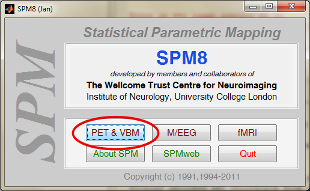
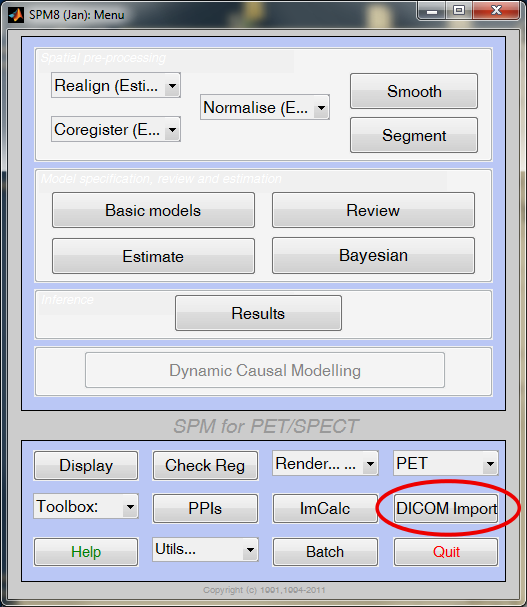
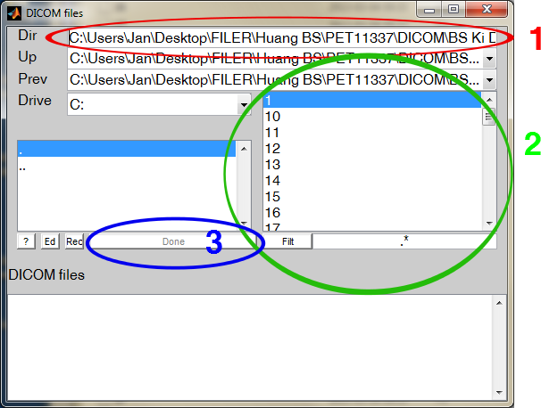
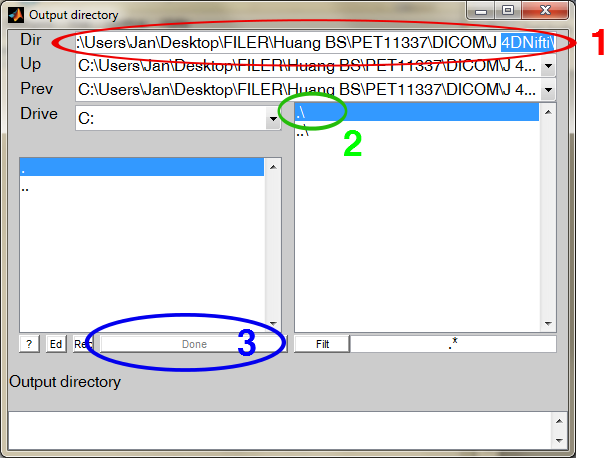

Jan Axelsson, 2013-MAR-11
The SPM package must be installed in the Matlab path (see Matlab instructions how to do this).
SPM has its own file browser, which may at first be hard to understand. To overcome that threshold, this instruction suggests that the path to the directory containing DICOM files are copied from the Windows explorer (or the Macintosh or Linux equivalents).
At the Matlab prompt, type:
spm

Click PET button

Click DICOM Import button

1) Paste input folder path into DIR field (CTRL+A, CTRL+V) (see RED CIRCLE)
2) Select all DICOM files (Put cursor at top of field,
move slider to bottom, SHIFT-click mouse)
(see GREEN
CIRCLE)
3) Press DONE button (see BLUE CIRCLE)

1) Paste output folder path into DIR field (CTRL+A, CTRL+V) (see RED CIRCLE)
If you paste the same path as above, the converted files will be written to the original DICOM-files folder (this is OK for most users)
2) Press symbol: .\ (see GREEN CIRCLE)
3) Press DONE button (see BLUE CIRCLE